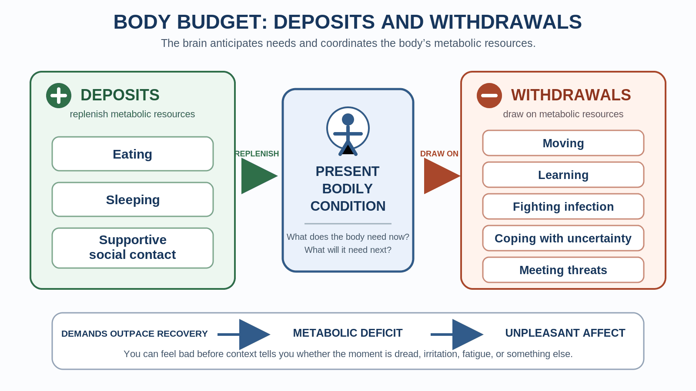
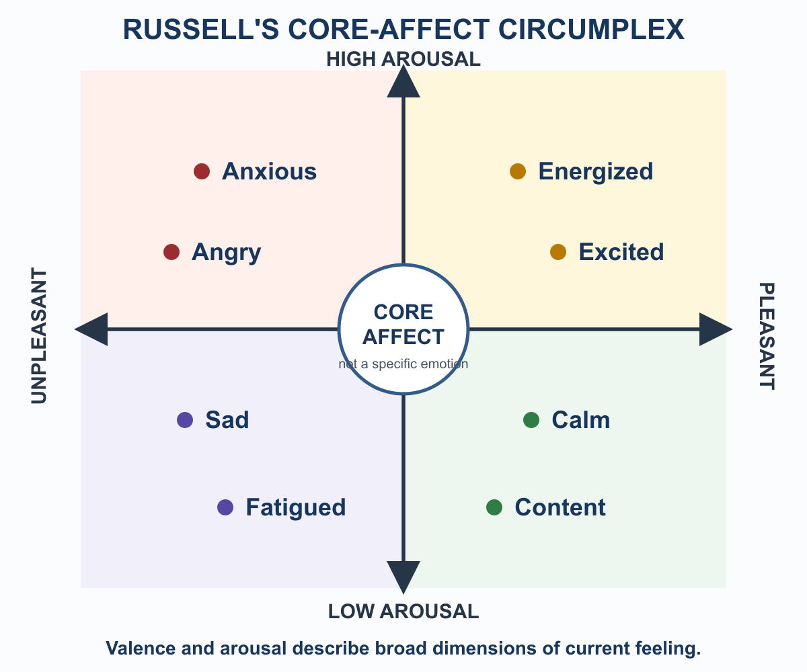
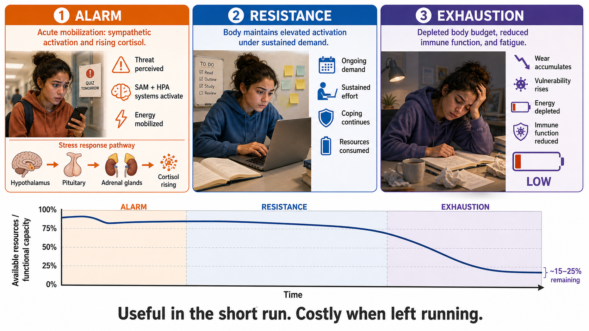

Emotion, Stress & Coping
Most people picture emotion the way they picture a smoke alarm: something happens, a circuit fires, and out comes a feeling. Fear follows threat. Joy follows good news. Disgust follows something rotten. The response seems automatic, fixed, and mostly beyond your influence.
That picture captures part of the story. Bodies prepare for action, situations are appraised, and some patterns recur across people and cultures. But emotion researchers disagree about how those pieces become an episode of fear, anger, relief, or joy. One influential contemporary framework—the theory of constructed emotion, developed in detail by neuroscientist Lisa Feldman Barrett—argues that the brain builds each emotional episode from bodily signals, context, past learning, and learned concepts. Other approaches emphasize appraisal, evolved action programs, or partly distinct emotion systems. No single framework has ended the debate.
Constructionism will organize this chapter because it gives us a useful question: What ingredients did the brain use to make this moment meaningful? That is a lens, not the official definition of emotion.
A constructed emotion is not imaginary, arbitrary, or consciously selected. Much of the process is automatic. The practical point is not "decide to feel differently." It is that bodily condition, context, concepts, and coping actions can change the conditions under which emotion unfolds.
Emotion is not irrational noise pasted onto thought. It helps organize attention and action around what matters. Stress mobilizes the body when demands press against coping resources. Coping works best when the response fits the demand. This chapter follows that sequence from regulation to emotion to stress to action.
Where This Fits
Chapter 3 introduced the autonomic nervous system, the HPA axis, and individual differences in stress reactivity. Chapter 7 showed how learning and prediction change behavior; its reward-prediction-error material is adjacent to, but not an explanation of, well-being adaptation here. Chapter 10 showed how relationships can support regulation across development. This chapter brings those threads together inside the present body. Chapter 13 then asks what happens when distress and dysregulation become persistent enough to impair daily life.
Learning Objectives
By the end of this chapter, you should be able to:
- Explain how homeostasis and allostasis provide complementary models of bodily regulation, and use the body-budget metaphor without treating it as a literal account.
- Distinguish core affect from a specific emotion and separate shared findings from a constructionist interpretation.
- Compare major emotion theories and explain what Patient S.M. does—and does not—show about the amygdala and fear.
- Describe emotional granularity and affect labeling at the level supported by current evidence.
- Distinguish rapid SAM activation from slower HPA activation, acute adaptive stress from chronic dysregulation, and historical GAS from allostatic load.
- Select and sequence coping strategies based on controllability, current arousal, timing, resources, and flexibility.
Section 1: The Regulated Body — Homeostasis, Allostasis, and Core Affect
Complementary models of regulation
You probably learned that the body maintains conditions such as temperature, blood glucose, and pH through homeostasis: feedback processes detect a deviation and help correct it. That model remains useful. Feedback is everywhere in physiology.
Allostasis emphasizes a complementary fact: organisms also anticipate needs and adjust before a serious deviation occurs. You may become hungry before energy stores are critically low, or alert before an expected demand. In Sterling's (2012) formulation, the brain helps coordinate these anticipatory adjustments using prior experience and present information.
The thermostat contrast is a teaching simplification, but a useful one. Homeostasis resembles a thermostat responding when the room cools. Allostasis resembles a system that knows your schedule and preheats the room. Real regulation uses both anticipation and feedback. One did not make the other obsolete.
The body budget is a framework, not an account balance
Barrett (2017a) uses body budget as a metaphor for the conditions that make regulation easier or harder. Sleep, hydration, nutrition, movement, recovery time, social connection, workload, uncertainty, and illness can all alter what the body must manage. "Deposits" and "withdrawals" make those influences memorable.
Here is the boundary: these conditions do not sit in one literal tank, and they cannot be converted into a single measurable balance. Social support is not metabolically interchangeable with glucose. A missed meal does not produce the same physiological change as a tense week. The framework is valuable because multiple conditions interact—not because one hidden meter explains every uncomfortable feeling.
{kind=link}

Interoception and core affect
Interoception is the nervous system's sensing and integration of signals from inside the body: breathing, heartbeat, gut activity, temperature, muscle tension, and other internal conditions. Those signals are combined with context and prior experience; interoception is neither a perfect meter nor merely imagination.
James Russell's (1980) model of core affect describes a broad background state along two dimensions:
- Valence: pleasant to unpleasant
- Arousal: activated to deactivated
You can be unpleasant and activated, as in agitation; pleasant and activated, as in excitement; unpleasant and deactivated, as in fatigue; or pleasant and deactivated, as in calm. Core affect is not a specific emotion. It does not by itself tell you whether high-arousal unpleasantness is fear, anger, embarrassment, or something else.
Constructionists interpret core affect as one ingredient the brain can categorize in context. Other emotion theories use dimensional feeling without accepting the stronger claim that every emotion is built from the same ingredients. The two-dimensional description is the shared model; what role it plays in producing emotion is theoretical.
{kind=link}

Sleep loss, hunger, social isolation, and sustained workload can each affect feeling and regulation, but not necessarily through one demonstrated body-budget mechanism. For example, experimental sleep loss reliably reduces positive affect and increases anxiety symptoms, while findings for negative affect vary with the kind of sleep loss and outcome measured (Palmer et al., 2024). Practical relevance does not require turning ordinary fatigue or distress into a physiological diagnosis.
Explain why homeostasis and allostasis are complementary. Then name the two dimensions of core affect and give two different emotions that could occupy the same region of the circumplex.
A class discussion feels unusually irritating after a short night of sleep. What can you reasonably infer about bodily condition and emotion—and what can you not diagnose from that one moment?
Section 2: How Does a Feeling Become an Emotion?
One evidence base, several interpretations
Researchers broadly agree that emotional episodes can involve bodily state, appraisal, context, learning, conceptual knowledge, behavior, and distributed brain activity. They disagree about how those contributions are organized. Constructionism is the lens used here, but it is not the only serious contemporary account. This is the theoretical boundary for the section; we will not repeat it after every paragraph.
| Approach | Central proposal | Durable contribution | Important boundary |
|---|---|---|---|
| James–Lange (James, 1884) | Perceiving bodily change contributes to felt emotion | Bodily feedback matters | Bodily patterns do not map neatly one-to-one onto emotion categories |
| Cannon–Bard (Cannon, 1927) | Arousal and conscious feeling can occur in parallel | Emotion is not simply a slow readout of the viscera | The historical model does not specify how context yields a particular experience |
| Schachter–Singer (Schachter & Singer, 1962) | Arousal is interpreted using situational information | Context and cognition shape experience | The famous findings have had replication problems, and appraisal need not occur only after arousal |
| Appraisal approaches | Evaluations of relevance, goals, control, and coping organize emotion | Meaning depends on the person's relation to the situation | Appraisal theories differ about whether appraisals are components, causes, or descriptions |
| Discrete-emotion approaches | Some emotion families reflect partly specialized, evolved patterns | Emotions can have differentiated effects and recurring action tendencies | Recurring patterns do not require one dedicated circuit per named emotion |
| Constructionist approaches | Emotion instances emerge from more basic processes, including bodily state and conceptualization | Explains context sensitivity, variation, and distributed processing | Influential and evidence-supported, but still debated rather than established by definition |
Distributed and multifunctional processing does not mean that every circuit contributes equally to every emotion. Threat-related circuitry exists, and the amygdala is important in some forms of threat learning and responding. It is not a single fear button.
Classic Study Walkthrough: Patient S.M. and the boundary of fear
The question: What does bilateral amygdala damage change about detecting and experiencing threat?
The evidence: Patient S.M. has rare bilateral amygdala damage associated with Urbach–Wiethe disease. She had difficulty recognizing fear in faces (Adolphs et al., 1994). She showed strikingly little fear with live snakes and spiders, in a haunted house, and while viewing frightening films (Feinstein et al., 2011). She also allowed unusually close interpersonal distance (Kennedy et al., 2009). Yet the story changed when threat came from inside the body: inhaling 35% CO₂ triggered fear and a panic attack in S.M. and two other people with bilateral amygdala damage (Feinstein et al., 2013).
Why it matters: The amygdala contributes importantly to detecting and responding to some externally triggered threats. It is not necessary for every experience of fear or panic. The CO₂ result also supplies the specific inferential boundary: one lesion case cannot establish that the amygdala converts surviving facts into felt "mattering." The snakes, faces, personal-space, and respiratory-threat findings together point to multiple routes into fear.
Affect labeling and emotional granularity
Affect labeling means putting a feeling into words. In some laboratory tasks, labeling emotional stimuli changes self-report, task responding, and neural activity, including activity in prefrontal regions and the amygdala (Lieberman et al., 2007; Torre & Lieberman, 2018). The effects depend on task and timing; recent work also shows that labeling can sometimes interfere with later reappraisal (Ariely et al., 2026). The observed result is that labeling can alter responding in some contexts. Reduced prediction error, improved construction, or "quieting the emotional brain" are possible interpretations—not what every experiment directly demonstrated.
Emotional granularity is the degree to which someone distinguishes among emotional states. Compare these labels:
- Anxious: an important outcome is uncertain; gather information, plan, or tolerate uncertainty.
- Frustrated: an obstacle blocks a goal; change the approach or address the obstacle.
- Disappointed: an expectation was not met; revise expectations, communicate, or seek another source of support.
That precision can suggest different actions. Across clinical and nonclinical research, higher granularity is robustly associated with functioning, social outcomes, and lower psychopathology (Ozomaro et al., 2025). The association is not a verdict about cause. Better functioning may support granularity, granularity may sometimes support regulation, both may depend on other skills, and evidence about reliable training remains developing.
Journaling, friendship, and therapy can involve emotion language, but their benefits cannot be reduced to one affect-labeling mechanism. A useful tool need not be a master explanation.
Which statement is an observation and which is an interpretation? (A) In one task, labeling fearful faces changed reported distress and activity in several brain regions. (B) Labeling worked because the brain reduced prediction error while constructing a more accurate emotion. Explain your choice.
A teammate says, "I feel bad about our project." Without asking for private health information, what questions could distinguish disappointment, frustration, and anxiety—and how might the first useful action change?
Section 3: Stress — Mobilization, Duration, and Cumulative Cost
Appraisal and the cognitive light cone
Stress is a pattern of psychological and bodily responses that occurs when a person appraises demands as taxing or exceeding available coping resources (Lazarus & Folkman, 1984). A stressor is the event or condition being appraised. Primary appraisal asks whether the situation matters and whether it involves harm, threat, or challenge. Secondary appraisal concerns coping options and resources.
The same exam can feel manageable when you have time, a plan, and sleep, but overwhelming when you feel unprepared and trapped. The event matters; so does the person–situation relationship.
Michael Levin uses cognitive light cone for the spatial and temporal scale of the goals an agent can represent and work toward (Levin, 2019). At a small scale, action may regulate an immediate local condition. A broader horizon can include nearby places and short-term outcomes. Human goals can extend to a distant family member, next year's education, the future of an institution, or an abstract commitment. This is a comparison of goal horizons, not a rigid ladder or one score that captures an organism's entire cognition.
A broader cognitive light cone is an achievement. It supports planning, cooperation, delayed action, long-term commitments, care for distant others, and collective or abstract goals. The boundary is not merely what an agent can sense or physically reach. It is what can matter enough to organize action.
Here is the Chapter 12 application: because humans can organize present action around distant, anticipated, social, and symbolic goals, threats to those goals can enter present appraisal even when no immediate physical danger is present. Remembering the past and imagining the future help make that reach possible (Schacter et al., 2007; Suddendorf & Corballis, 2007). Those appraisals can recruit genuine present stress responses.
Keep the levels separate. In Levin's broad cybernetic framework, discrepancy means a gap between a represented goal and a current state. Lazarus and Folkman's psychological account asks how a person appraises demands and coping resources. SAM and HPA describe physiological response routes. The ideas can connect without becoming one mechanism.
![Space-time diagram centered on Here and Now. The horizontal dimension runs from near to distant space, and the vertical dimension runs from the present toward the future. Three increasingly broad goal horizons surround the center: immediate bodily and local regulation; nearby organisms, learned routes, and short-term outcomes; and future self, distant relationships, institutions, abstract commitments, and long-term collective outcomes. A note distinguishes goal scale from sensory range. The takeaway says that a broader goal horizon lets distant outcomes guide present action, so threats to distant goals can enter present appraisal now.](../images/ch12/ch12_cognitive_light_cone_goal_horizon.svg)
Fast SAM, slower HPA, interacting consequences
The acute stress response is not one hormone traveling down one line.
- The sympathetic–adrenal–medullary (SAM) system acts rapidly. Sympathetic nerves and adrenal catecholamines—especially epinephrine and norepinephrine—support immediate cardiovascular and respiratory mobilization.
- The hypothalamic–pituitary–adrenal (HPA) axis unfolds more slowly. Signals from hypothalamus to pituitary to adrenal cortex culminate in cortisol release, which helps coordinate energy availability and alters activity across many tissues.
- Immune, metabolic, cardiovascular, and behavioral effects interact across different timescales. Their pattern varies with the stressor, appraisal, duration, prior experience, health, and opportunity for recovery (Russell & Lightman, 2019).
Remembered, anticipated, symbolic, socially evaluated, and immediate physical threats can recruit overlapping stress systems. "Overlapping" matters. They do not produce an identical response in every person or context, and cortisol is not the direct cause of the immediate increase in heart rate.
GAS as history; allostatic load as the contemporary frame
Hans Selye's discovery began with a failed control. In the 1930s, he injected rats with ovarian extract and observed enlarged adrenal glands, shrunken thymus and lymph tissue, and stomach damage. Control injections of formalin produced a similar triad. The response was not specific to a new hormone; it reflected something noxious happening to the animal (Selye, 1956).
Selye organized prolonged stress into the General Adaptation Syndrome (GAS): alarm, resistance, and exhaustion. GAS became a historically influential heuristic. Alarm names initial mobilization. Resistance names continued adjustment while a demand persists. Exhaustion names breakdown under sufficiently severe or prolonged exposure. These are useful labels, not a universal three-step capacity curve. Bodies do not all move through fixed stages or spend a single reserve until a predictable percentage remains.
The stronger contemporary framework is allostatic load: cumulative multisystem cost associated with repeated or sustained demands and inadequate recovery (McEwen, 1998a, 1998b). Chronic stress can involve inflammation, impaired immune regulation, altered cortisol rhythms, cardiovascular strain, metabolic changes, sleep disruption, and slower recovery. Cortisol can be too high, too low, mistimed, or poorly regulated; chronic stress is not simply "high cortisol plus a suppressed immune system." Acute stress can temporarily enhance some immune functions, while chronic stress more often dysregulates or suppresses them and can worsen inflammatory disease (Dhabhar, 2009).
Students often report becoming ill after finals. That pattern is familiar, but it is not proof that a student entered a GAS exhaustion stage. Exposure to pathogens, sleep, behavior, timing, and immune regulation all matter. The restrained inference is that demanding periods and inadequate recovery can accumulate costs that become noticeable around the transition out of stress.
{kind=link}

Behavioral response patterns
The fight-or-flight response describes rapid mobilization that can support confrontation or escape. Actual behavior may also include freezing, monitoring, seeking help, or protecting others.
Taylor et al. (2000) proposed tend-and-befriend to highlight nurturant and affiliative responding that earlier male-centered stress research underemphasized. Average sex differences have been reported, but the pattern is not a female-only system or a third autonomic branch. Men also affiliate; women also fight, flee, and freeze; context and learning matter.
Oxytocin is involved in social behavior, but "the bonding hormone" is too simple. A frequently cited experiment exposed 37 healthy men to a laboratory social stressor after intranasal oxytocin or placebo and with or without support from a friend. The combination produced the lowest cortisol and anxiety responses (Heinrichs et al., 2003). That small experiment does not establish oxytocin as the general mechanism by which social support protects everyone.
Sort these into the correct category: immediate catecholamine-related cardiovascular mobilization; slower cortisol release; alarm–resistance–exhaustion; cumulative multisystem cost. Use the labels SAM, HPA, historical GAS, and allostatic load once each.
An acute stress response can be useful because it mobilizes action. Chronic or repeatedly unresolved stress can become costly because interacting systems remain dysregulated or recover poorly. "Stress is harmful" is too broad; duration, magnitude, context, and recovery change the answer.
Section 4: Coping Is a Problem of Fit
Strategies, not personality types
Problem-focused coping acts on the stressor: gather information, make a plan, negotiate, practice, change the environment, or remove a demand. Emotion-focused coping acts on the response: reappraise, slow breathing, seek support, take a restorative break, or make room for feelings that cannot be solved away.
These are strategies, not personality types. Effective coping depends on controllability, timing, current arousal, available resources, and flexibility.
| Situation | Useful first move | Why |
|---|---|---|
| Controllable demand; arousal manageable | Problem-focused | Action can change the stressor |
| Low-control or irreversible demand | Emotion-focused | The response is more changeable than the event |
| Controllable demand; arousal too high for effective action | Emotion-focused, then problem-focused | Regulation can make later action possible |
| Mixed or changing situation | Reappraise and switch as needed | Fit can change over time |
Avoidance can be useful briefly—stepping away may prevent a bad decision—but repeated avoidance leaves a controllable problem untouched. Flexibility is the skill.
A student receives confusing instructions for a paper and is too activated to read them carefully. Identify the controllable part, the current arousal problem, and a two-step coping sequence. Why would either strategy alone fit poorly at first?
Practice coping fit
The chapter's central skill is choosing what to do first. The standalone lab lets you classify varied nonclinical stressors by controllability and arousal, select a response, get immediate mechanism-level feedback, explain the rule, and transfer it to a new scenario.
Open the Coping Fit Learning Lab
The lab does not score your body, diagnose stress, or send responses anywhere. It is practice in decision logic.
Supporting the conditions for flexible coping
Some actions do not solve a particular stressor but improve the conditions under which coping occurs.
Sleep: Experimental sleep loss reliably reduces positive affect and increases anxiety symptoms, although other emotional effects vary (Palmer et al., 2024). Sleep is not a cure for a difficult situation, but severe sleep loss can make regulation and planning harder.
Movement: Physical-activity interventions for university students are associated with lower anxiety, depression, and stress symptoms, but studies vary widely in quality, activity type, and effect size (Huang et al., 2024). Movement can support coping; it is not evidence that distress comes from insufficient exercise.
Food and hydration: Regular access to food and water supports ordinary physiological needs. Research links diet quality with mental-health outcomes, but mechanisms are complex and causal estimates vary (Firth et al., 2019). "Hangry" is a useful joke, not a complete theory of mood.
Social support: Relationships can provide information, practical help, perspective, and emotional connection (Cohen & Wills, 1985). Those are several pathways, not one deposit into a literal account. Seeking support can be emotion-focused, problem-focused, or both.
Hedonic adaptation and the Chapter 7 bridge
Hedonic adaptation is the descriptive tendency for well-being to shift after life changes and then move partly back toward a prior level. The classic lottery-winner and accident-survivor study found far less enduring separation in reported happiness than people often predict (Brickman et al., 1978). Adaptation is incomplete and varies across events; unemployment, chronic pain, and bereavement can have lasting effects.
Chapter 7's reward-prediction-error material offers an analogy: expected outcomes generate different learning signals than surprising ones. But that adjacent process is not the demonstrated mechanism of the hedonic pattern. Description first; mechanism only when the evidence earns it.
A club event has low attendance. Which parts are controllable before the next event, which feelings may need regulation now, and what information would tell you whether to switch strategies?
AI Connection: Emotion-Shaped Output Without a Human Body
Current language models can produce empathic, angry, enthusiastic, or distressed language. That is emotion-shaped output: language patterned like human emotional expression.
Human emotion occurs in an embodied organism with allostasis, interoception, metabolic needs, developmental history, and social regulation. Current language models do not have human glucose regulation, breathing, cortisol rhythms, fatigue, or interoceptive signals. They can generate a precise label such as "overwhelmed and uncertain" without that label reporting a humanlike bodily state inside the model.
This comparison is deliberately focused. It does not settle every philosophical question about every possible machine. It tells you why fluent emotional language from present systems is not, by itself, evidence of humanlike feeling. Useful as a mirror; not proof of a felt state.
Chapter Summary
Homeostasis uses feedback to maintain regulated conditions; allostasis emphasizes anticipatory adjustment. Bodies use both. The body budget is a useful metaphor for interacting supports and demands, not a literal account. Interoception brings internal signals into regulation, while Russell's core affect model describes current feeling along valence and arousal. Core affect is not a specific emotion.
Emotion theories agree that bodily state, appraisal, context, learning, conceptual knowledge, and brain systems matter, but disagree about how those pieces are organized. Constructionism is this chapter's organizing lens, not a settled definition. Patient S.M.'s response to external threats shows an important amygdala contribution; CO₂-induced fear and panic show that the amygdala is not required for every route into fear. Affect labeling can alter responding in some contexts, and granularity robustly correlates with functioning, but their mechanisms and trainability remain open questions.
Stress depends on demands, appraisal, coping resources, and time. SAM supports rapid catecholamine-related mobilization; the HPA axis contributes slower cortisol-related regulation. GAS remains a historical heuristic. Allostatic load better captures cumulative, multisystem costs of repeated or unresolved demands and inadequate recovery.
Coping works through fit. Change a controllable stressor when you can; regulate the response when you cannot; sometimes regulate first so that action becomes possible. Sleep, movement, nourishment, and relationships can support flexible coping without sharing one magical mechanism.
Underneath all of it is a humane point. Your body is not necessarily malfunctioning when it remains activated after finals or reacts strongly during a crowded week. It is an old, mostly effective system operating in a world full of remembered, symbolic, socially evaluated, and chronic threats. Useful in the short run; costly when left running.
Connections
| Topic in This Chapter | Connects To | Why |
|---|---|---|
| SAM, HPA, and allostasis | Chapter 3 — Neuroscience & Biological Bases | The biological systems introduced there become interacting response routes here |
| Hedonic adaptation | Chapter 7 — Learning | Reward-prediction error is an adjacent learning process, not the established mechanism of well-being adaptation |
| Social support and regulation | Chapter 10 — Lifespan Development | Relationships can support regulation across development through several pathways |
| Emotion-shaped AI output | Chapter 11 — Social Psychology | Social perception encourages people to infer minds and feelings from fluent behavior |
| Chronic dysregulation | Chapter 13 — Psychological Disorders & Therapy | The next chapter examines persistent distress and impairment without treating ordinary stress as diagnosis |
Review Questions
1. How are homeostasis and allostasis complementary rather than competing replacements? Use the thermostat and preheating analogy, then name one limitation of the analogy.
Show model answer
Homeostasis highlights feedback correction that keeps regulated conditions within viable ranges; allostasis highlights anticipation and coordinated adjustment before needs become urgent. A responding thermostat illustrates feedback, while preheating illustrates anticipation. Real physiology uses both, and neither model implies that the body has only one controller or one fixed set point.
2. Two people report high-arousal unpleasant core affect. One calls it anger and the other fear. Explain why core affect alone does not specify the emotion.
Show model answer
Core affect locates broad feeling on valence and arousal. Anger and fear can occupy similar high-arousal unpleasant territory, so distinguishing them requires additional information such as appraisal, context, goals, learning, concepts, and action tendencies.
3. Separate a shared observation from a constructionist interpretation using affect labeling or distributed brain activity as your example.
Show model answer
Observation: in some tasks, putting emotion into words changes self-report, task responses, and activity in several brain regions. Constructionist interpretation: labeling changes how the brain categorizes bodily and contextual information while constructing an emotion. The observation can support that interpretation without uniquely proving it.
4. What do the combined findings from Patient S.M.—faces, snakes and spiders, a haunted house, personal space, frightening films, and CO₂ inhalation—allow you to conclude?
Show model answer
The amygdala contributes importantly to recognizing and responding to some external threats, as shown by S.M.'s unusual responses to faces, animals, films, and proximity. CO₂ nevertheless produced fear and panic in people with bilateral amygdala damage, including S.M. Therefore, the amygdala is not necessary for every experience of fear or panic, and one lesion case cannot show that it alone turns facts into felt mattering.
5. Distinguish SAM from HPA by timing, key signal, and immediate function.
Show model answer
SAM acts rapidly through sympathetic nerves and adrenal catecholamines such as epinephrine and norepinephrine, supporting immediate cardiovascular and respiratory mobilization. HPA unfolds more slowly through hypothalamus, pituitary, and adrenal cortex, culminating in cortisol release that helps coordinate energy and other longer-timescale responses. The routes interact, but cortisol does not directly cause the first rapid heart-rate increase.
6. Why can acute stress be adaptive while chronic stress becomes dysregulating?
Show model answer
Short-term mobilization can improve readiness for action and can temporarily enhance some immune functions. Repeated or unresolved demands with inadequate recovery can disturb cortisol timing, inflammation and immune regulation, cardiovascular function, metabolism, sleep, and behavior. Duration, magnitude, context, and recovery determine whether mobilization remains useful.
7. Compare GAS with allostatic load. Why should a post-finals illness not be treated as proof of exhaustion?
Show model answer
GAS is Selye's historical alarm–resistance–exhaustion heuristic. Allostatic load is a contemporary framework for cumulative costs across interacting systems. GAS is not a universal depletion curve, and illness after finals can reflect exposure, sleep, behavior, immune regulation, timing, and other causes. It is compatible with accumulated strain but does not prove a discrete exhaustion stage.
8. A scholarship application is controllable, but a student is too activated to begin. Choose an initial coping response and a next response, and explain the fit.
Show model answer
Begin with a brief emotion-focused strategy that reduces arousal enough for effective action—for example, paced breathing, a short walk, or talking through the immediate anxiety. Then switch to problem-focused coping: clarify requirements, divide the application into tasks, and schedule the first one. Problem-focused action fits the controllable demand; emotion-focused coping fits the initial arousal barrier.
9. Transfer the coping-fit rule to a missed group-project deadline when the submission cannot be reopened but the group's next milestone is still changeable.
Show model answer
Use emotion-focused coping for the irreversible missed deadline: acknowledge disappointment, reduce blame-driven arousal, and seek perspective. Use problem-focused coping for the controllable next milestone: identify what failed, clarify roles, create checkpoints, and communicate early. Fit depends on which part of the situation is changeable now, not on choosing one permanent coping style.
Key Terms
- affect labeling
- putting an emotional experience or emotional stimulus into words
- allostasis
- anticipatory adjustment that helps maintain stability under changing demands
- allostatic load
- cumulative multisystem cost associated with repeated or sustained demands and inadequate recovery
- body budget
- a metaphor for interacting conditions that support regulation or add regulatory demand, not a literal measurable account
- cognitive light cone
- the spatial and temporal scale of goals an agent can represent and work toward
- core affect
- broad feeling described along valence and arousal dimensions
- emotion-focused coping
- strategies aimed primarily at regulating the response to a stressor
- emotional granularity
- the degree to which a person distinguishes among specific emotional states
- General Adaptation Syndrome (GAS)
- Selye's historical alarm–resistance–exhaustion heuristic for prolonged stress
- homeostasis
- feedback regulation that helps maintain internal conditions within viable ranges
- HPA axis
- the hypothalamic–pituitary–adrenal pathway culminating in cortisol release
- interoception
- sensing and integrating signals from inside the body
- primary appraisal
- evaluation of whether a situation is relevant, harmful, threatening, or challenging
- problem-focused coping
- strategies aimed primarily at changing a stressor
- SAM system
- rapid sympathetic–adrenal–medullary activation involving sympathetic nerves and catecholamines
- secondary appraisal
- evaluation of coping options and resources
- stress
- psychological and bodily responding when demands are appraised as taxing or exceeding coping resources
- stressor
- an event or condition appraised as demanding
- theory of constructed emotion
- an influential account in which emotion instances emerge from bodily state, context, learning, and conceptualization
Further Reading
Barrett, L. F. (2017). How Emotions Are Made. Publisher overview — An accessible statement of the constructionist framework that organizes this chapter.
Sapolsky, R. M. (2004). Why Zebras Don't Get Ulcers (3rd ed.). Publisher overview — A memorable introduction to stress physiology and the problem of chronic symbolic threats.
McEwen, B. S. (1998). Protective and damaging effects of stress mediators. DOI record — A concise foundation for allostatic load and the time-dependent effects of stress mediators.
References
Full citations for factual claims made in this chapter. Further Reading above is curated separately for student exploration.
Adolphs, R., Tranel, D., Damasio, H., & Damasio, A. (1994). Impaired recognition of emotion in facial expressions following bilateral damage to the human amygdala. Nature, 372, 669–672. https://doi.org/10.1038/372669a0
Ariely, Y., Mokady, A., Reggev, N., & Anholt, G. E. (2026). Affect labeling and reappraisal as an emotion regulation strategy. Affective Science, 7, 282–292. https://doi.org/10.1007/s42761-026-00362-z
Barrett, L. F. (2017a). How Emotions Are Made: The Secret Life of the Brain. Houghton Mifflin Harcourt.
Barrett, L. F. (2017b). The theory of constructed emotion: An active inference account of interoception and categorization. Social Cognitive and Affective Neuroscience, 12, 1–23. https://doi.org/10.1093/scan/nsw154
Barrett, L. F., Adolphs, R., Marsella, S., Martinez, A. M., & Pollak, S. D. (2019). Emotional expressions reconsidered: Challenges to inferring emotion from human facial movements. Psychological Science in the Public Interest, 20, 1–68. https://doi.org/10.1177/1529100619832930
Brickman, P., Coates, D., & Janoff-Bulman, R. (1978). Lottery winners and accident victims: Is happiness relative? Journal of Personality and Social Psychology, 36, 917–927. https://doi.org/10.1037/0022-3514.36.8.917
Cannon, W. B. (1927). The James–Lange theory of emotions: A critical examination and an alternative theory. American Journal of Psychology, 39, 106–124.
Cohen, S., & Wills, T. A. (1985). Stress, social support, and the buffering hypothesis. Psychological Bulletin, 98, 310–357. https://doi.org/10.1037/0033-2909.98.2.310
Dhabhar, F. S. (2009). Enhancing versus suppressive effects of stress on immune function: Implications for immunoprotection and immunopathology. Neuroimmunomodulation, 16, 300–317. https://doi.org/10.1159/000216188
Feinstein, J. S., Adolphs, R., Tranel, D., & Damasio, A. (2011). The human amygdala and the induction and experience of fear. Current Biology, 21, 34–38. https://doi.org/10.1016/j.cub.2010.11.042
Feinstein, J. S., Buzza, C., Hurlemann, R., Follmer, R. L., Dahdaleh, N. S., Coryell, W. H., Welsh, M. J., Tranel, D., & Wemmie, J. A. (2013). Fear and panic in humans with bilateral amygdala damage. Nature Neuroscience, 16, 270–272. https://doi.org/10.1038/nn.3323
Firth, J., Marx, W., Dash, S., Carney, R., Teasdale, S. B., Solmi, M., Stubbs, B., Schuch, F. B., Carvalho, A. F., Jacka, F., & Sarris, J. (2019). The effects of dietary improvement on symptoms of depression and anxiety: A meta-analysis of randomized controlled trials. Psychosomatic Medicine, 81, 265–280. https://doi.org/10.1097/PSY.0000000000000673
Gündem, D., Potočnik, J., De Winter, F.-L., et al. (2022). The neurobiological basis of affect is consistent with psychological construction theory and shares a common neural basis across emotional categories. Communications Biology, 5, 1354. https://doi.org/10.1038/s42003-022-04324-6
Heinrichs, M., Baumgartner, T., Kirschbaum, C., & Ehlert, U. (2003). Social support and oxytocin interact to suppress cortisol and subjective responses to psychosocial stress. Biological Psychiatry, 54, 1389–1398. https://doi.org/10.1016/S0006-3223(03)00465-7
Huang, K., Beckman, E. M., Ng, N., Dingle, G. A., Han, R., James, K. E., Winkler, E., Stylianou, M., & Gomersall, S. R. (2024). Effectiveness of physical activity interventions on undergraduate students' mental health: Systematic review and meta-analysis. Health Promotion International, 39(3), daae054. https://doi.org/10.1093/heapro/daae054
James, W. (1884). What is an emotion? Mind, 9, 188–205.
Kennedy, D. P., Gläscher, J., Tyszka, J. M., & Adolphs, R. (2009). Personal space regulation by the human amygdala. Nature Neuroscience, 12, 1226–1227. https://doi.org/10.1038/nn.2381
Lazarus, R. S., & Folkman, S. (1984). Stress, Appraisal, and Coping. Springer.
Levin, M. (2019). The computational boundary of a “self”: Developmental bioelectricity drives multicellularity and scale-free cognition. Frontiers in Psychology, 10, 2688. https://doi.org/10.3389/fpsyg.2019.02688
Lieberman, M. D., Eisenberger, N. I., Crockett, M. J., Tom, S. M., Pfeifer, J. H., & Way, B. M. (2007). Putting feelings into words: Affect labeling disrupts amygdala activity in response to affective stimuli. Psychological Science, 18, 421–428. https://doi.org/10.1111/j.1467-9280.2007.01916.x
McEwen, B. S. (1998a). Protective and damaging effects of stress mediators. New England Journal of Medicine, 338, 171–179. https://doi.org/10.1056/NEJM199801153380307
McEwen, B. S. (1998b). Stress, adaptation, and disease: Allostasis and allostatic load. Annals of the New York Academy of Sciences, 840, 33–44. https://doi.org/10.1111/j.1749-6632.1998.tb09546.x
Ozomaro, B., Wein, P. Y., Miller, S., Ospina, L. H., Goodman, M., Torous, J., & Kimhy, D. (2025). Emotional granularity in health and psychopathology: A scoping review. Journal of Psychiatric Research, 190, 277–295. https://doi.org/10.1016/j.jpsychires.2025.08.008
Palmer, C. A., Bower, J. L., Cho, K. W., Clementi, M. A., Lau, S., Oosterhoff, B., & Alfano, C. A. (2024). Sleep loss and emotion: A systematic review and meta-analysis of over 50 years of experimental research. Psychological Bulletin, 150, 440–463. https://doi.org/10.1037/bul0000410
Russell, G., & Lightman, S. (2019). The human stress response. Nature Reviews Endocrinology, 15, 525–534. https://doi.org/10.1038/s41574-019-0228-0
Russell, J. A. (1980). A circumplex model of affect. Journal of Personality and Social Psychology, 39, 1161–1178. https://doi.org/10.1037/h0077714
Schachter, S., & Singer, J. E. (1962). Cognitive, social, and physiological determinants of emotional state. Psychological Review, 69, 379–399. https://doi.org/10.1037/h0046234
Schacter, D. L., Addis, D. R., & Buckner, R. L. (2007). Remembering the past to imagine the future: The prospective brain. Nature Reviews Neuroscience, 8, 657–661. https://doi.org/10.1038/nrn2213
Selye, H. (1956). The Stress of Life. McGraw-Hill.
Sterling, P. (2012). Allostasis: A model of predictive regulation. Physiology & Behavior, 106, 5–15. https://doi.org/10.1016/j.physbeh.2011.06.004
Suddendorf, T., & Corballis, M. C. (2007). The evolution of foresight: What is mental time travel, and is it unique to humans? Behavioral and Brain Sciences, 30, 299–313. https://doi.org/10.1017/S0140525X07001975
Taylor, S. E., Klein, L. C., Lewis, B. P., Gruenewald, T. L., Gurung, R. A. R., & Updegraff, J. A. (2000). Biobehavioral responses to stress in females: Tend-and-befriend, not fight-or-flight. Psychological Review, 107, 411–429. https://doi.org/10.1037/0033-295X.107.3.411
Torre, J. B., & Lieberman, M. D. (2018). Putting feelings into words: Affect labeling as implicit emotion regulation. Emotion Review, 10, 116–124. https://doi.org/10.1177/1754073917742706